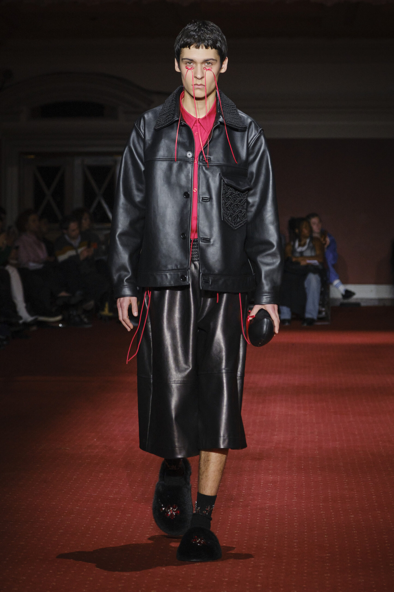

Collections Archive
A Season by Season Journey
A Season by Season Journey
Archive

AW25 • London Fashion Week
School nostalgia, Aesop's fables, twisted twin sets. Shown at Goldsmiths' Hall, February 2025.
View Collection →
SS25 • London Fashion Week
Inspired by carnation flowers, featuring a collaboration with artist Genieve Figgis whose paintings were printed directly onto garments.

AW24 • London Fashion Week
Inspired by Queen Victoria's mourning garments. Preserved fabrics, funeral flowers, and the ritual of grief transformed into wearable art.

SS24 • London Fashion Week
Themes of weddings, obsession, and being bound. White lace, pearl details, bridal silhouettes with a dark undercurrent.

AW23 • London Fashion Week
Irish folklore, Celtic symbols, earthy tones. Simone's menswear debut, inspired by ancient Ireland's powerful feminine mythology.

SS23 • London Fashion Week
Inspired by the Little Ark of Kilbaha, Co. Clare. Paper roses, pearl embellishments and the wild Irish coastline.
Season by Season
From debut to Haute Couture — each collection builds on the last, deepening a world rooted in Irish heritage and subversive femininity.
View Latest: AW25